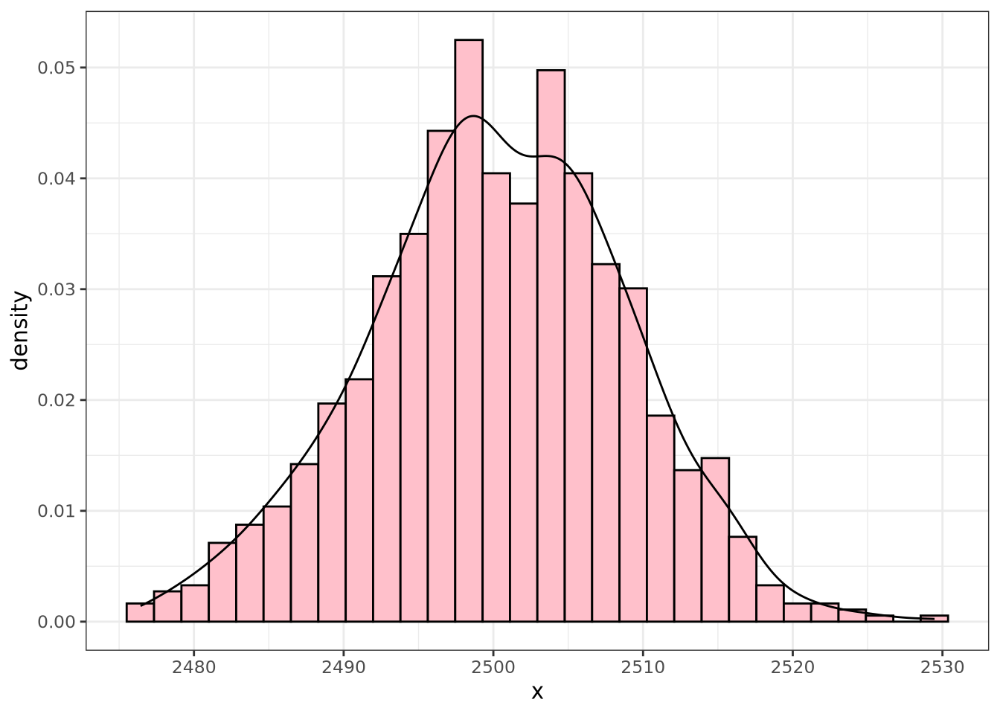
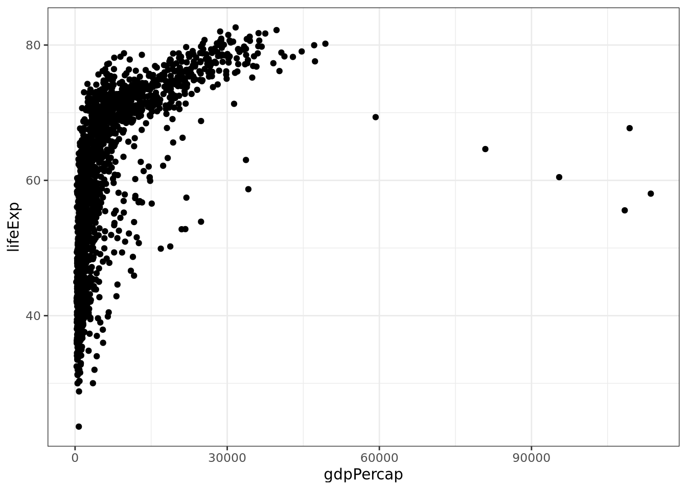

summary(cars) speed dist
Min. : 4.0 Min. : 2.00
1st Qu.:12.0 1st Qu.: 26.00
Median :15.0 Median : 36.00
Mean :15.4 Mean : 42.98
3rd Qu.:19.0 3rd Qu.: 56.00
Max. :25.0 Max. :120.00 This is an Quarto document. For more details on using Quarto see https://quarto.org/docs/guide/.
When you click the Render button a document will be generated that includes both content as well as the output of any embedded R code chunks within the document. You can embed an R code chunk like this:
summary(cars) speed dist
Min. : 4.0 Min. : 2.00
1st Qu.:12.0 1st Qu.: 26.00
Median :15.0 Median : 36.00
Mean :15.4 Mean : 42.98
3rd Qu.:19.0 3rd Qu.: 56.00
Max. :25.0 Max. :120.00 You can also embed plots, for example:
Note that the echo = FALSE parameter was added to the code chunk to prevent printing of the R code that generated the plot.
RN <- rnorm(1000, 2500, 8.7952)
(xbar <- mean(RN))[1] 2499.797(S <- sd(RN))[1] 8.707271The mean of RN is 2499.8 and the standard deviation is 8.71.
The following code $\bar{x} = \frac{\sum_{i=1}^{n}x_i}{n}$ produces an inline definition of the mean: \(\bar{x} = \frac{\sum_{i=1}^{n}x_i}{n}\). To get a display equation for the mean, use $$\bar{x} = \frac{\sum_{i=1}^{n}x_i}{n}$$ \[\bar{x} = \frac{\sum_{i=1}^{n}x_i}{n}\] to produce the output above.
\[s^2 = \frac{\sum_{i=1}^{n}(x_i - \bar{x})^2}{(n-1)}\]
set.seed(27)
example <- c(5, 7, 9, 11, 13)
example[1] 5 7 9 11 13(xbar <- mean(example))[1] 9(v <- var(example))[1] 10(V <- sum((example - xbar)^2)/(length(example)-1))[1] 10DF <- data.frame(data = example, dmm = example - xbar, dmm2 = (example - xbar)^2)
DF data dmm dmm2
1 5 -4 16
2 7 -2 4
3 9 0 0
4 11 2 4
5 13 4 16library(tidyverse)
RND <- data.frame(x = RN)
head(RND) x
1 2482.165
2 2491.499
3 2490.585
4 2498.011
5 2497.991
6 2500.866ggplot(data = RND, aes(x = x, y = ..density..)) +
geom_histogram(color = "black", fill = "pink") +
geom_density() +
theme_bw() 
Unimodal symmetric \(\rightarrow\) use mean for center and standard deviation for spread.
Unimodal Skewed (either left or right) \(\rightarrow\) use median for center and IQR for spread.
n <- 10000
sr <- rexp(n, .001)
us <- rnorm(n, 100, 15)sr and us. Note: If you use ggplot2 you need to pass a data frame or tibble as the first argument to your data.# Using Base R
hist(sr)md <- median(sr)
iqr <- IQR(sr)
c(md, iqr)[1] 691.7752 1075.3438# Using tidyverse
DF <- data.frame(x = sr)
ggplot(data = DF, aes(x = x)) +
geom_histogram()DF %>%
summarize(Md = median(x), iqr = IQR(x)) -> tva
tva Md iqr
1 691.7752 1075.344The distribution of sr is unimodal and skewed to the right with a center at the median which is 691.7752498, and a spread (IQR = 1075.3438475).
library(nycflights13)
# ?flights
str(flights)tibble [336,776 × 19] (S3: tbl_df/tbl/data.frame)
$ year : int [1:336776] 2013 2013 2013 2013 2013 2013 2013 2013 2013 2013 ...
$ month : int [1:336776] 1 1 1 1 1 1 1 1 1 1 ...
$ day : int [1:336776] 1 1 1 1 1 1 1 1 1 1 ...
$ dep_time : int [1:336776] 517 533 542 544 554 554 555 557 557 558 ...
$ sched_dep_time: int [1:336776] 515 529 540 545 600 558 600 600 600 600 ...
$ dep_delay : num [1:336776] 2 4 2 -1 -6 -4 -5 -3 -3 -2 ...
$ arr_time : int [1:336776] 830 850 923 1004 812 740 913 709 838 753 ...
$ sched_arr_time: int [1:336776] 819 830 850 1022 837 728 854 723 846 745 ...
$ arr_delay : num [1:336776] 11 20 33 -18 -25 12 19 -14 -8 8 ...
$ carrier : chr [1:336776] "UA" "UA" "AA" "B6" ...
$ flight : int [1:336776] 1545 1714 1141 725 461 1696 507 5708 79 301 ...
$ tailnum : chr [1:336776] "N14228" "N24211" "N619AA" "N804JB" ...
$ origin : chr [1:336776] "EWR" "LGA" "JFK" "JFK" ...
$ dest : chr [1:336776] "IAH" "IAH" "MIA" "BQN" ...
$ air_time : num [1:336776] 227 227 160 183 116 150 158 53 140 138 ...
$ distance : num [1:336776] 1400 1416 1089 1576 762 ...
$ hour : num [1:336776] 5 5 5 5 6 5 6 6 6 6 ...
$ minute : num [1:336776] 15 29 40 45 0 58 0 0 0 0 ...
$ time_hour : POSIXct[1:336776], format: "2013-01-01 05:00:00" "2013-01-01 05:00:00" ...ggplot(data = flights, aes(x = air_time)) +
geom_density() +
facet_wrap(vars(carrier)) +
theme_bw()library(gapminder)
str(gapminder)tibble [1,704 × 6] (S3: tbl_df/tbl/data.frame)
$ country : Factor w/ 142 levels "Afghanistan",..: 1 1 1 1 1 1 1 1 1 1 ...
$ continent: Factor w/ 5 levels "Africa","Americas",..: 3 3 3 3 3 3 3 3 3 3 ...
$ year : int [1:1704] 1952 1957 1962 1967 1972 1977 1982 1987 1992 1997 ...
$ lifeExp : num [1:1704] 28.8 30.3 32 34 36.1 ...
$ pop : int [1:1704] 8425333 9240934 10267083 11537966 13079460 14880372 12881816 13867957 16317921 22227415 ...
$ gdpPercap: num [1:1704] 779 821 853 836 740 ...ggplot(data = gapminder, aes(x = gdpPercap, y = lifeExp)) +
geom_point() +
theme_bw()
#
ggplot(data = gapminder,
aes(x = gdpPercap, y = lifeExp, color = continent)) +
geom_point() +
theme_bw()#
ggplot(data = gapminder,
aes(x = gdpPercap, y = lifeExp, color = continent, size = pop)) +
geom_point() +
theme_bw()ggplot(data = gapminder,
aes(x = gdpPercap, y = lifeExp, color = continent, size = pop)) +
geom_point() +
theme_bw() +
xlim(0, 6000) +
xlab("GDP per capita") +
ylab("Life Expectancy (in years)")
alaska_flight <- flights %>%
filter(carrier == "AS")
ggplot(data = alaska_flight,
aes(x = dep_delay, y = arr_delay)) +
geom_point()#
ggplot(data = alaska_flight,
aes(x = dep_delay, y = arr_delay)) +
geom_point(alpha = 0.2, color = "blue") +
theme_bw()
#
ggplot(data = alaska_flight,
aes(x = dep_delay, y = arr_delay)) +
geom_jitter(alpha = 0.2, color = "blue") +
theme_bw()
geom_line()early_january_weather <- weather %>%
filter(origin == "EWR", month ==1, day <= 15)
ggplot(data = early_january_weather, aes(x = time_hour, y = temp)) +
geom_line() +
theme_bw()ggplot(data = weather, aes(x = temp)) +
geom_histogram()#
ggplot(data = weather, aes(x = temp)) +
geom_histogram(color = "black", fill = "lightblue") +
theme_bw() +
xlab("Temperature in Degrees Fahrenheit")#
ggplot(data = weather, aes(x = temp)) +
geom_histogram(color = "black", fill = "lightblue", binwidth = 3) +
theme_bw() +
xlab("Temperature in Degrees Fahrenheit")#
ggplot(data = weather, aes(x = temp)) +
geom_histogram(color = "black", fill = "lightblue", binwidth = 3) +
theme_bw() +
xlab("Temperature in Degrees Fahrenheit") +
facet_wrap(vars(month))ggplot(data = weather, aes(y = temp)) +
geom_boxplot()#
ggplot(data = weather, aes(y = temp, x= factor(month))) +
geom_boxplot() +
theme_bw()ggplot(data = flights, aes(x = carrier)) +
geom_bar(fill = "purple", color = "black") +
theme_bw()xtabs(~carrier, data = flights)carrier
9E AA AS B6 DL EV F9 FL HA MQ OO UA US
18460 32729 714 54635 48110 54173 685 3260 342 26397 32 58665 20536
VX WN YV
5162 12275 601 # Or
table(flights$carrier)
9E AA AS B6 DL EV F9 FL HA MQ OO UA US
18460 32729 714 54635 48110 54173 685 3260 342 26397 32 58665 20536
VX WN YV
5162 12275 601 ggplot(data = flights, aes(x = carrier, fill = origin)) +
geom_bar(color = "black") +
theme_bw()#
ggplot(data = flights, aes(x = carrier, fill = origin)) +
geom_bar(color = "black", position = "dodge") +
theme_bw()alaska_flights <- flights %>%
filter(carrier == "AS")
portland_flights <- flights %>%
filter(dest == "PDX")many_airports <- flights %>%
filter(dest == "SEA" | dest == "SFO" | dest == "PDX" |
dest == "BTV" | dest == "BDL")
dim(many_airports)[1] 21640 19many_airports2 <- flights %>%
filter(dest %in% c("SEA", "SFO", "PDX", "BTV", "BDL"))
dim(many_airports2)[1] 21640 19summary_weather <- weather %>%
summarize(M = mean(temp), S = sd(temp))
summary_weather# A tibble: 1 × 2
M S
<dbl> <dbl>
1 NA NAsummary_weather <- weather %>%
summarize(M = mean(temp, na.rm = TRUE), S = sd(temp, na.rm = TRUE))
summary_weather# A tibble: 1 × 2
M S
<dbl> <dbl>
1 55.3 17.8summary_monthly_temp <- weather %>%
group_by(month) %>%
summarize(M = mean(temp, na.rm = TRUE), S = sd(temp, na.rm = TRUE))
summary_monthly_temp# A tibble: 12 × 3
month M S
<int> <dbl> <dbl>
1 1 35.6 10.2
2 2 34.3 6.98
3 3 39.9 6.25
4 4 51.7 8.79
5 5 61.8 9.68
6 6 72.2 7.55
7 7 80.1 7.12
8 8 74.5 5.19
9 9 67.4 8.47
10 10 60.1 8.85
11 11 45.0 10.4
12 12 38.4 9.98head(weather)# A tibble: 6 × 15
origin year month day hour temp dewp humid wind_dir wind_speed wind_gust
<chr> <int> <int> <int> <int> <dbl> <dbl> <dbl> <dbl> <dbl> <dbl>
1 EWR 2013 1 1 1 39.0 26.1 59.4 270 10.4 NA
2 EWR 2013 1 1 2 39.0 27.0 61.6 250 8.06 NA
3 EWR 2013 1 1 3 39.0 28.0 64.4 240 11.5 NA
4 EWR 2013 1 1 4 39.9 28.0 62.2 250 12.7 NA
5 EWR 2013 1 1 5 39.0 28.0 64.4 260 12.7 NA
6 EWR 2013 1 1 6 37.9 28.0 67.2 240 11.5 NA
# ℹ 4 more variables: precip <dbl>, pressure <dbl>, visib <dbl>,
# time_hour <dttm>weather <- weather %>%
mutate(temp_in_C = (temp - 32)/1.8 )
head(weather)# A tibble: 6 × 16
origin year month day hour temp dewp humid wind_dir wind_speed wind_gust
<chr> <int> <int> <int> <int> <dbl> <dbl> <dbl> <dbl> <dbl> <dbl>
1 EWR 2013 1 1 1 39.0 26.1 59.4 270 10.4 NA
2 EWR 2013 1 1 2 39.0 27.0 61.6 250 8.06 NA
3 EWR 2013 1 1 3 39.0 28.0 64.4 240 11.5 NA
4 EWR 2013 1 1 4 39.9 28.0 62.2 250 12.7 NA
5 EWR 2013 1 1 5 39.0 28.0 64.4 260 12.7 NA
6 EWR 2013 1 1 6 37.9 28.0 67.2 240 11.5 NA
# ℹ 5 more variables: precip <dbl>, pressure <dbl>, visib <dbl>,
# time_hour <dttm>, temp_in_C <dbl>freq_dest <- flights %>%
group_by(dest) %>%
summarize(num_flights = n())
freq_dest# A tibble: 105 × 2
dest num_flights
<chr> <int>
1 ABQ 254
2 ACK 265
3 ALB 439
4 ANC 8
5 ATL 17215
6 AUS 2439
7 AVL 275
8 BDL 443
9 BGR 375
10 BHM 297
# ℹ 95 more rowsfreq_dest %>%
arrange(num_flights)# A tibble: 105 × 2
dest num_flights
<chr> <int>
1 LEX 1
2 LGA 1
3 ANC 8
4 SBN 10
5 HDN 15
6 MTJ 15
7 EYW 17
8 PSP 19
9 JAC 25
10 BZN 36
# ℹ 95 more rowsfreq_dest %>%
arrange(desc(num_flights))# A tibble: 105 × 2
dest num_flights
<chr> <int>
1 ORD 17283
2 ATL 17215
3 LAX 16174
4 BOS 15508
5 MCO 14082
6 CLT 14064
7 SFO 13331
8 FLL 12055
9 MIA 11728
10 DCA 9705
# ℹ 95 more rowslibrary(PASWR2)
head(EPIDURAL) doctor kg cm ease treatment oc complications
1 Dr. B 116 172 Difficult Traditional Sitting 0 None
2 Dr. C 86 176 Easy Hamstring Stretch 0 None
3 Dr. B 72 157 Difficult Traditional Sitting 0 None
4 Dr. B 63 169 Easy Hamstring Stretch 2 None
5 Dr. B 114 163 Impossible Traditional Sitting 0 None
6 Dr. B 121 163 Difficult Hamstring Stretch 3 Nonextabs(~ease + treatment, data = EPIDURAL) treatment
ease Hamstring Stretch Traditional Sitting
Difficult 8 12
Easy 25 32
Impossible 2 6table(EPIDURAL$ease, EPIDURAL$treatment)
Hamstring Stretch Traditional Sitting
Difficult 8 12
Easy 25 32
Impossible 2 6EPIDURAL %>%
group_by(ease, treatment) %>%
summarize(MOC = mean(oc, na.rm = TRUE), Number = n()) # A tibble: 6 × 4
# Groups: ease [3]
ease treatment MOC Number
<fct> <fct> <dbl> <int>
1 Difficult Hamstring Stretch 4.25 8
2 Difficult Traditional Sitting 1.67 12
3 Easy Hamstring Stretch 0.64 25
4 Easy Traditional Sitting 0.903 32
5 Impossible Hamstring Stretch 1.5 2
6 Impossible Traditional Sitting 1.17 6